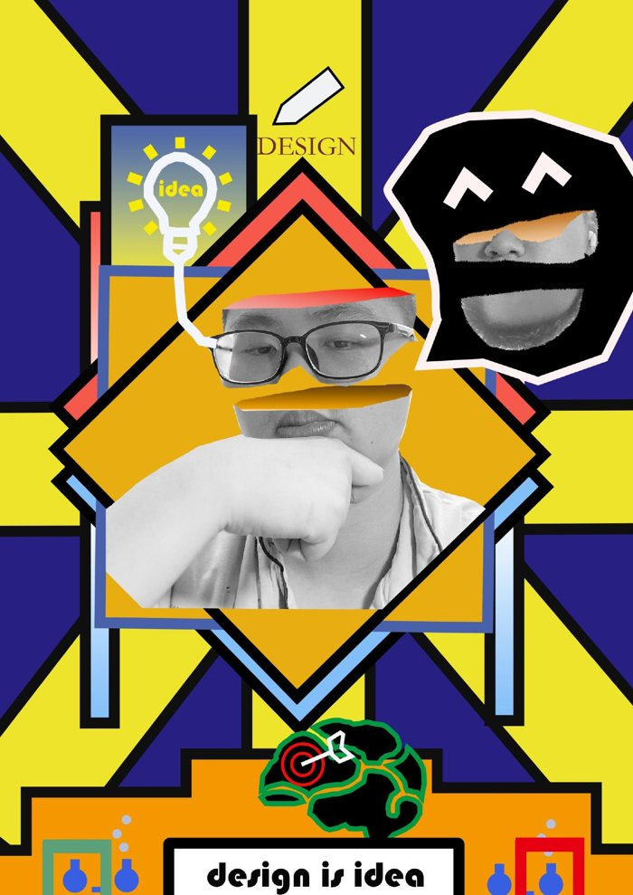
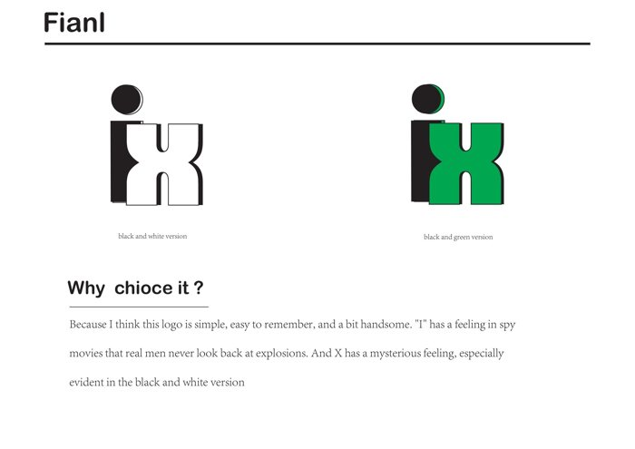
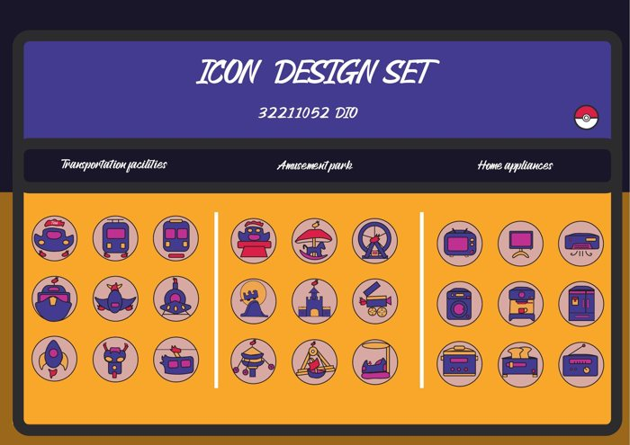
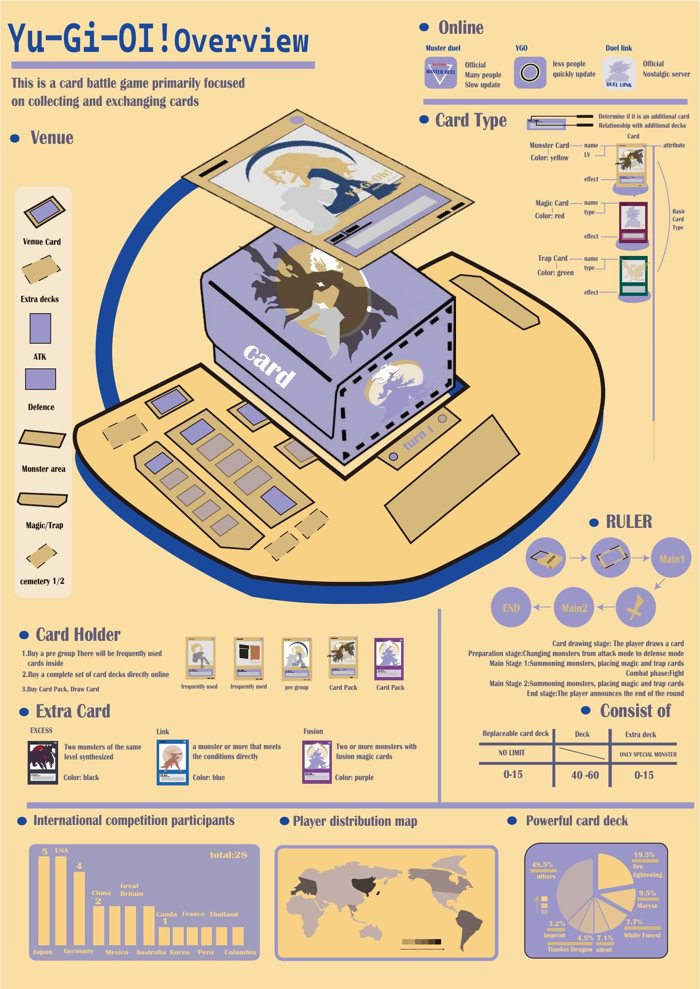
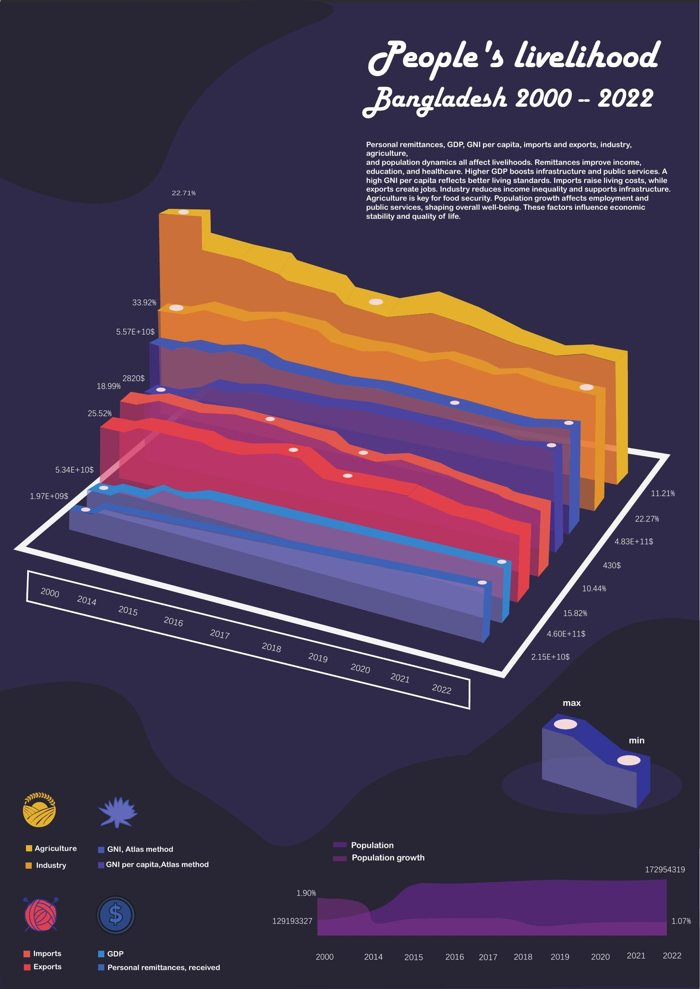

Creative Poster创意海报
Posters / 海报
Posters, typography, personal identity and information design — Year 2 onward. / 仅收录大二及之后的作品。

Posters / 海报
Posters / 海报

Identity / 标志

Information / 信息设计

Information / 信息设计

Information / 信息设计